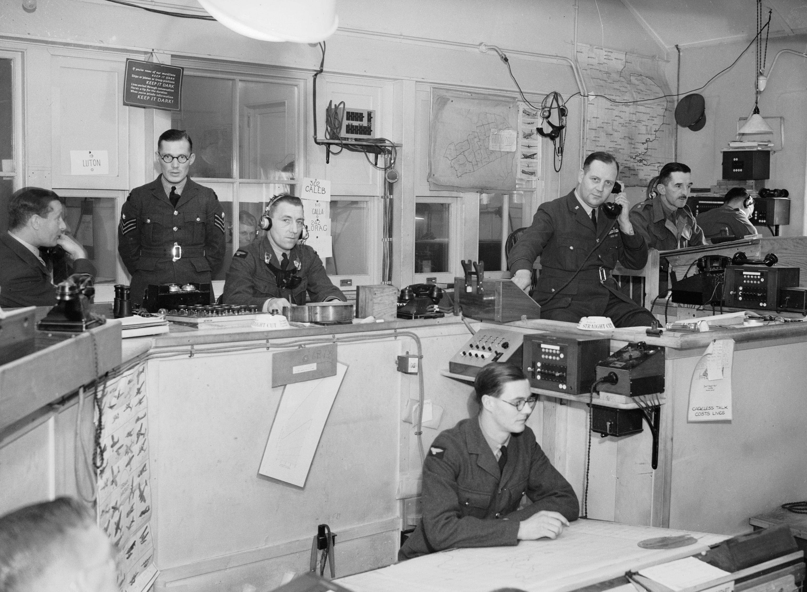
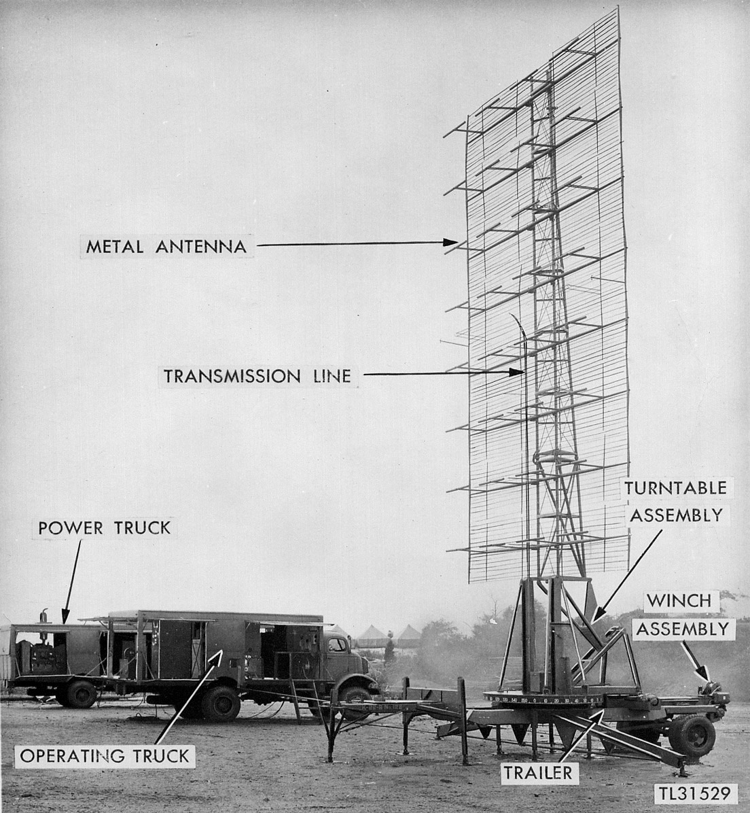

Radar in World War II
During the Battle of Britain in 1940, radar gave the Royal Air Force warning of approaching German aircraft. Chain Home stations sent information into the Dowding System. Reports from radar and ground observers helped controllers decide where to send fighter planes.
This system made radar useful in battle. A radar station could detect an aircraft, but people still had to check the information and pass it to the right units. Radar helped Britain defend itself because it worked with pilots, observers, and controllers. It was one important part of the defense.



Pearl Harbor showed what could happen when people misunderstood a radar warning. On December 7, 1941, operators at Opana detected approaching aircraft at 7:02 a.m. They reported the planes, but Lieutenant Kermit Tyler thought they could be friendly aircraft.



Telephone operator Joseph McDonald said he passed the warning to Tyler and asked about calling staff back. Tyler's statement explains that he considered several friendly flights, including B-17 bombers. Together, the accounts show that the warning reached someone, but it did not lead to action. These statements give two views of the same warning. Each writer described his own role after the attack, so comparing their accounts helps explain what happened.
“I dismissed it as nothing unusual.”
These examples show both radar's strength and its limits. Radar could provide an early warning. People had to understand that warning and decide how to respond.